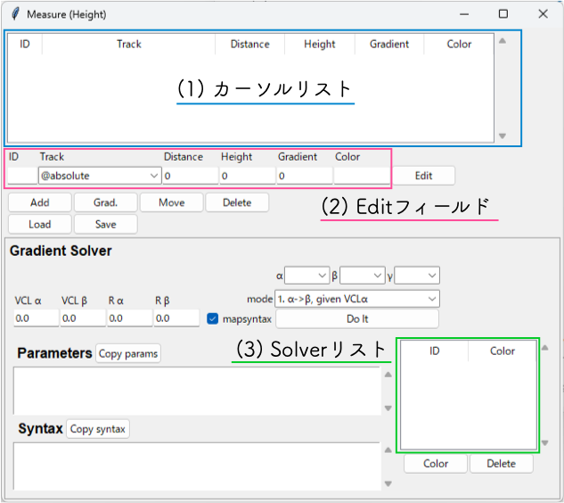

Measureウィンドウ(高度)¶
{kind=link}
カーソル機能¶
プロットウィンドウ上の座標(距離, 高度)と勾配を調べる機能です。 任意の数のカーソルを設定できます。
Addボタン¶
Addボタンを押すと、プロットウィンドウ上に新しいx印カーソルを作成し、左クリックするまでの間マウスで位置を動かせます。 新しく作成したカーソルにはIDが割り振られ、カーソルリスト(1)にデータが表示されます。 カーソルが指し示す位置の距離程、高度は、カーソルリストのDistance, Heightフィールドに表示されます。
Trackボックスで @absolute が指定されている場合、カーソルはプロットウィンドウの任意の位置に動かせます。
Trackボックスで 任意の軌道キー を選択している場合、カーソルは選択した軌道上のみを動かせます。 このとき、カーソルが示す地点の軌道勾配がGradientフィールドに表示されます。
Grad.ボタン¶
カーソルリストで選択したカーソルについて、方角カーソルをマウスで指し示した方向に動かせます。 マウスを動かしている間、方角カーソルが示す角度に対応した勾配(単位: [‰])がリストのGradientフィールドに表示されます。 方角カーソルは左クリックするまで動かせます。
リストで選択したカーソルのTrack: @absolute の場合、方角カーソルは距離程正の自由な方向（±90°以内）に向けられます。
リストで選択したカーソルのTrack: 任意の軌道キー の場合は、方角カーソルは動きません。
Moveボタン¶
カーソルリストで選択したカーソルについて、左クリックするまでの間マウスで示した位置に動かせます。
Editボタン¶
カーソルリストで選択したカーソルについて、パラメータをEditフィールド(2)で指定した値に変更します。
Track: @absolute の場合、Distance, Height, Gradient, Color全ての値を変更できます。
Track: 任意の軌道キー の場合は、Distance, Colorのみが変更可能です。
Deleteボタン¶
カーソルリストで選択したカーソルを削除します。
Loadボタン¶
下記Saveボタンで書き出したxmlファイルを読み込み、カーソル情報をカーソルリストとプロット画面に復元します。 Gradient Solverの実行結果も同時に復元されます。
Loadを実行すると、カーソルリスト・Solverリストの内容は消去され、xmlファイルから読み込んだ内容に書き換えられます。
Saveボタン¶
作成したカーソルの情報をxmlファイルに書き出します。 同時に、Gradient Solverの実行結果も同じファイルに書き出します。
Gradient Solver¶
α,β,γボックスで選択したカーソルを通る最適な勾配軌道を探索します。
α,β,γに割り当てたいカーソルのIDをα,β,γボックスで選択し、計算Modeを選択してDo Itボタンを押すと、計算結果がプロットウィンドウとParameters, Syntaxフィールドに表示されます。
Parametersフィールドには計算条件を、SyntaxフィールドにはGradient構文で示した計算結果を表示します。 表示内容はそれぞれCopy params, Copy syntaxボタンでクリップボードへコピーできます。
計算結果にはID, Colorが割り振られ、Solverリスト(3)に表示されます。
Colorボタン¶
リストで選択した計算結果について、プロットウィンドウへ表示するラインカラーを変更します。 クリックするとカラーピッカーが表示され、任意のカラーを指定できます。
Deleteボタン¶
リストで選択した計算結果を削除します。
Mode¶
計算Modeは次の通りです。
{kind=link}
α->β, given VCLα
カーソルαの延長線上に起点、カーソルβの延長線上に終点を持つ勾配軌道を求める
入力パラメータ
VCLα: 勾配の縦曲線長
出力パラメータ
shift from pt. α: カーソルαから勾配開始地点までの距離
α->β, given Rα
カーソルαの延長線上に起点、カーソルβの延長線上に終点を持つ勾配軌道を求める
入力パラメータ
VCLα: 勾配の縦曲線半径
出力パラメータ
shift from pt. α: カーソルαから勾配開始地点までの距離
{kind=link}
α->β->γ, given VCLα,β
カーソルαの延長線上に起点、カーソルβの延長線上に終点を持つ勾配軌道と、カーソルβの延長線上に起点、カーソルγの延長線上に終点を持つ勾配軌道を同時に求める
入力パラメータ
VCLα: 1つ目の勾配の縦曲線長
VCLβ: 2つ目の勾配の縦曲線長
出力パラメータ
shift from pt. α: カーソルαから1つ目の勾配開始地点までの距離
shift from pt. β: カーソルβから2つ目の勾配開始地点までの距離
α->β->γ, given Rα,β
カーソルαの延長線上に起点、カーソルβの延長線上に終点を持つ勾配軌道、カーソルβの延長線上に起点、カーソルγの延長線上に終点を持つ勾配軌道を同時に求める
入力パラメータ
Rα: 1つ目の勾配の縦曲線半径
Rβ: 2つ目の勾配の縦曲線半径
出力パラメータ
shift from pt. α: カーソルαから1つ目の勾配開始地点までの距離
shift from pt. β: カーソルβから2つ目の勾配開始地点までの距離